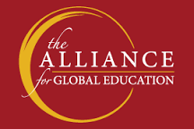
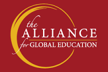

Carina Corbin
Master's of Engineering Student at Cornell Tech, Class of 2021
carinabcorbin (at) gmail.com
Hi There!
Welcome to my github webpage!
This webpage was created to practice my CSS/HTML skills, so a lot of the information will be outdated
Here are a few things that will never change:

I started coding when I wanted to edit my Yahoo webpage in 3rd grade and Tumblr in high school.
Because of this, web design has always been the most therapeutic coding for me and I probably won't pursue it professionally
The transition to backend was not easy. I learned while pursuing my college degree that natural talent is nice, but practice is the key to success
Outside of coding languages: I also study Mandarin Chinese and Korean. I also speak some Spanish ^^
Other things that make me happy: story-telling (written and verbal), listening to music, dancing, trying new foods and making people smile
My name is Carina Corbin and I am currently pursuing in Master's of Engineering in Computer Science at Cornell Tech
Prior to Cornell, I worked in client-facing software development roles full-time at Avanade and Palantir. During my undergraduate degree at Amherst, I held software engineering internships in virtual reality research, SaaS, and investmant banking.
My passion is building user-centric software. Whether using Java or Pyspark, speaking English or Mandarin, I do my best to break down difficult problems and create technical solutoins.

 
